A-RESCUE 3.0¶
About¶
A-RESCUE 3.0 is an agent-based road traffic simulator specifically designed for urban hurricane evacuation simulation. It is created as a part of the NSF-funded Hazard SEES project. The conceptual basis and justification for this simulator are presented in the first two papers: Ukkusuri et al. (2017) (for v1.0) and Gehlot et al. (2019) (for v2.0). It is built on Repast Simphony 2.6.
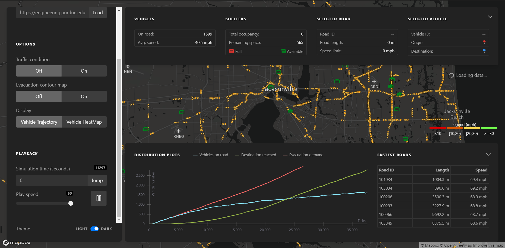
Screenshot of A-RESCUE 3.0 running a preloaded simulation scenario.
Getting started¶
Quickstart¶
An online demo has been hosted at https://engineering.purdue.edu/HSEES/EvacVis/. This demo uses pre-stored vehicle trajectory files simulated using a base inputs scenario and stored on a server at Purdue University owned by Dr. Ukkusuri. This demo shows the user interface and controls that are described in the Visualization Interface section.
Building and running the simulator¶
Download the Repast Simphony installer and install Repast with Java (JDK) 8 (preferred) or later version. You may need administrative privilege to install it.
Clone this A-RESCUE repository to a suitable location on your system:
git clone https://github.com/umnilab/A_RESCUE.git <target directory>. To learn more about cloning in GitHub, see this.Load the
EvacSimproject in Eclipse:Open Eclipse IDE (via Repast Simphony app). Go to
File → Open Projects from File System.Click on the
Directorybutton and select the subdirectoryRepast_ParaRoute_PartOpt/EvacSiminside the target directory where you cloned the repository.Uncheck the
EvacSim/Evacsimproject (the one with lowercase ‘s’).
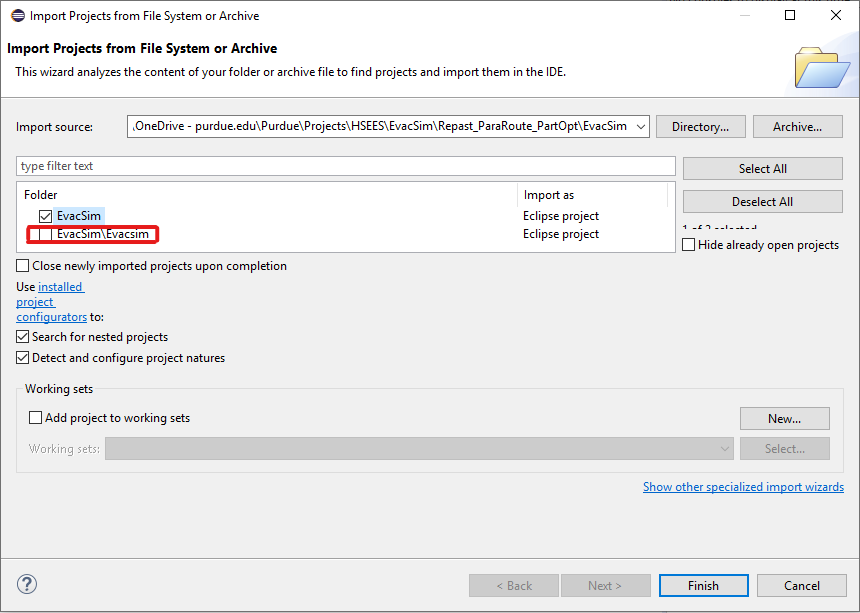
If required, modify the inputs of the simulation run scenario according to your needs in the configuration file (see
EvacSim/Repast_ParaRoute_PartOpt/EvacSim/data/Data.propertiesin the Package Explorer panel) as described in the ‘Input Data’ section below.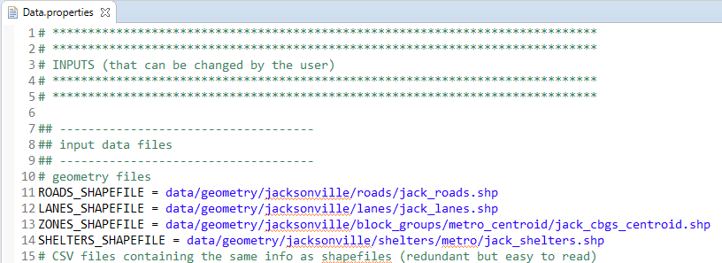
Setup the run configuration (
Run → Run Configurations) as follows:Expand
Java Applicationin the navigation panel on the left and select the configurationEvacSim Model(with uppercase ‘S’).You may change the memory size settings in the
VM argumentssection on theArgumentstab based on your requirement and the server’s memory. The default setting is:-Xss256M -Xms512M -Xmx6000Mwhich should work for a computer with 6 GB or more available RAM. For more information about these variables, see this.
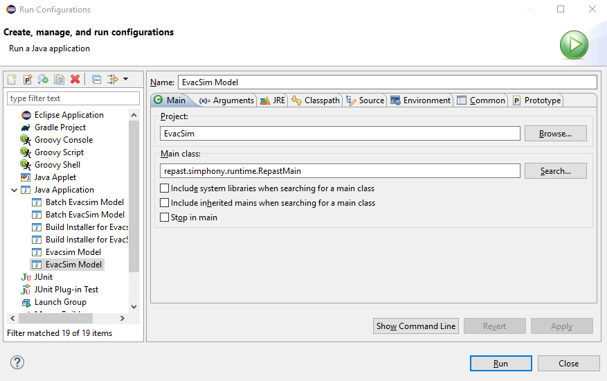
Click the Run button (or go to
Run → Run) to open the Repast Simphony simulation window.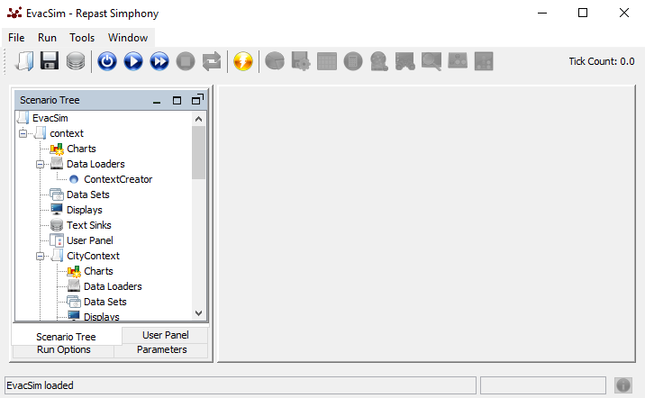
Run the simulation (
Run → Init). You should see the Console window in Eclipse printing the program runtime log. After a few seconds, you should see an image of a road network showing up in the Repast Simphony simulation window but without any vehicle moving on them. Unless there is an error in the Console window, this means that the simulation is running properly. Depending on the input demand size, the simulation may take a long time to finish. When it finishes without error, the console will terminate logging.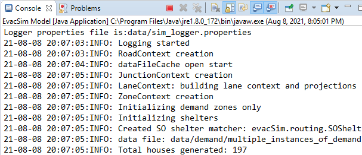
Look in the output directory as desribed in the Collected Output section. Unless JSON or CSV data collection was disabled, you should see several JSON or CSV files there.
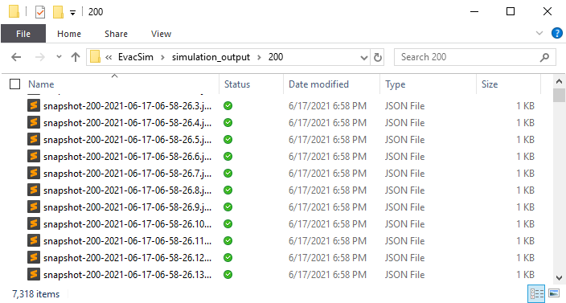
Using the visualization interface (VI)¶
This is the main module for the users of this software. Steps for using the VI are:
Clone the EvacVis repository to a suitable location:
gh repo clone umnilab/HSEES_Viz <target directory>.Follow the instructions in
~/EvacVis/README.md(link). You will needNode.jsandNPMfor running a local server.
Installing the online task manager (OTM)¶
End user clients like the visualization interface connect to the online task manager, a gateway for running the simulation remotely. This section summaries the steps needed to install a copy of the OTM and configure it. It is composed of two major components:
the gateway control program, and
a copy of the simulation prepared to run in “batch mode” without the GUI.
There are three major steps to the setup process. First, the server will need to have the prerequisites installed. Next, the code for the gateway control program is retrieved and configured with the server details. Finally, the simulation copy is added and configured.
More detailed instructions can be found within the gateway control program’s code repository at the Bitbucket repo page.
Installing the OTM prerequisites¶
Running the simulation requires a working copy of the Java Runtime Environment (JRE). The simulation was developed with version 8 of the Java language. It may or may not work well with newer versions of the language. If the server where the OTM will execute does not have Java or has a newer version of the Java language which has compatibility issues, a copy of OpenJDK can be installed following the instructions found on the OpenJDK installation page.
The OTM control program is written in the Javascript language using the Node.JS framework and uses a few support scripts written in the bash shell scripting language. Installing the Node.JS runtime engine can be done by following the instructions on the download page.
Getting and configuring the control program¶
The code for the control program and the base files needed to create a template of the simulation can be retrieved by cloning the repository with the command:
git clone https://bitbucket.org/purduesimulation/control-program.git
In the cloned repository, the
codedirectory holds the Node.js code needed for the control program. It is configured by modifying the values within theconfig.jsfile. Most values should be left unaltered, but appropriate file paths and URLs specific to the server where this is being installed need to be set for:global.SCRATCH_ROOT global.WEB_ROOT_DIR global.WEB_GW_DIR global.URL_DOMAIN global.URL_ROOT
Creating and configuring a template copy of the simulation¶
Within the Repast GUI of the simulation, there is an option to package the model and all of its dependencies into one JAR file that can be copied to a server and executed without the GUI.
A copy of this is provided in the git repository and can be found within the
tmpl_filesdirectory namedcomplete_model.jar.If a newer version is available, place it here before creating a simulation template. At any point in the future when creating updated templates, delete the existing
complete_model.jarorcomplete_model.zipfile found here in thetmpl_filesdirectory and replace it with the newer copy.If a custom version is required, build and test the simulation code as normal within Eclipse and then use the instructions for exporting a model JAR to create the custom
complete_model.jarfile:
Within the
tmpl_filesfolder is a helper script which will unpack the model JAR and add additional files needed for the gateway program to control the simulation. Change into thetmpl_filesdirectory and run the command:./make_template.shThis will produce a
templatedirectory in the same location as thecodeandtmpl_filesdirectories. Thistemplatedirectory will be copied and used as the base each time a user executes the simulation. The extra bash scripts added to this directory should function without alterations, but they may need small changes to account for unique conditions of the server.The
Data.propertiesfile found attemplate/data/Data.propertiesis the configuration file for the simulation and is where several values are set to optimize the simulation for the server. Some of these values will be overwritten at runtime by the user’s input selections, but some of them relate to specific details about the server which the user will not know or have to change. Be sure to set these values now:N_THREADSto set the number of concurrent threads the simulation will use.N_PARTITIONSto set the number of network partitions the simulation will use.ENABLE_NETWORKshould be set totrueso the model will attempt to contact the control program after starting. The control program can still start and provide basic monitoring of a simulation that does not enable network communication, but there will be no ability to send it real-time events and reduced capacity to receive status updates from it as the control program will have to passively scan output files.GATEWAY_ADDRESSshould be set to127.0.0.1and theGATEWAY_PORTshould be set to match the same value in theconfig.jsfile from the previous control program configuration step. By default it should be47907, but it can be changed to any number desired between1001and65535so long as both of these configuration files match and the particular port number is not already in use by another server.Any other values needed in the case of customized model versions.
At this point the online task manager should have a working copy of the simulation and be configured to execute it on behalf of the users. Within the code directory is a Makefile and the gateway can be started from within the code directory with the command: make run . It can be accessed by connecting a client like the VI web-site to the address of the server (domain or IP) on the port chosen above.
If desired, documentation for the specific distribution and version of Linux which the server is running can be consulted for how to set it as a daemon or service to run in the background unattended.
How it works¶
Framework¶
A-RESCUE is based on Repast Simphony’s simulation framework where agent and environment objects are stored in “contexts” that then interact with each other. The key components and their interaction as currently implemented in A-RESCUE are shown in the following figure and explained in the subsequent sections.
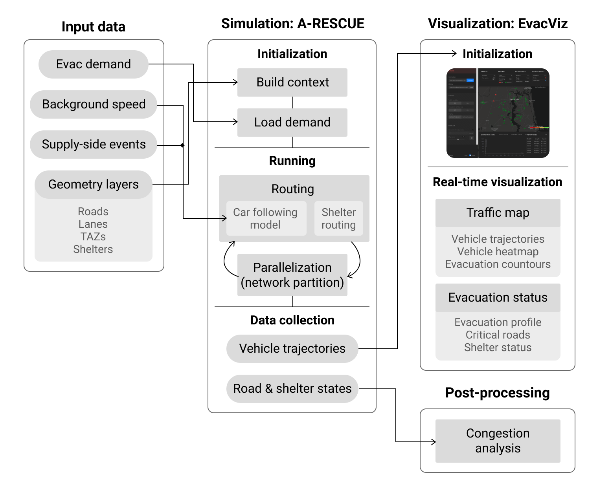
Key components of the simulation framework using A-RESCUE.
Object contexts and geometry layers¶
Repast Simphony uses a context manager class factory for working with collections of objects and providing other utilities. The entry point of the simulation setup is the evacSim.ContextCreator class. The following high-level tasks are contained in this class:
Setting up event handlers, including for the simulation run and end and recurring events;
Setting up the scenario name, output directory, and the logger;
Creating the contextual objects as well as the data collection context;
The simulator makes use of the following principal objects and their contexts.
City: The
citycontext.CityContextobject serves as a container of other subcontexts — roads, junctions, lanes, and zones. It also has helper functions to deal with resolving road network components, such as finding a road at given coordinates and between junctions and nearby shelters.Road and lane: The road network is encapsulated in
citycontext.RoadContextcontainingcitycontext.Roadobjects. Roads are directed (source → target) and may contain one or morecitycontext.Lanes. Roads serve as the main longitudinal network links while lanes are just used for lateral movement once a vehicle’s road is resolved.Note: Roads, lanes, and shelters each require as inputs both a shapefile as well as a copy of its attributes in a CSV file.
Zone: This represents the geographical unit of analysis, hereby referred to as the traffic analysis zone (TAZ). It is typically taken as a county, zip code area, a smaller unit, or a census-level region. The zone shapefile must contain the coordinates of the centroid of each analysis zone as the table row. TAZ IDs are natural numbers starting arbitrarily from 1. For Jacksonville, we used census block groups defined as per the 2017 American Community Survey as the zone areas.
Shelter: This includes public shelters during evacuation such as schools, hospitals, nursing homes, malls, hangars, etc. These are identified as point objects. For the Jacksonville area, we filtered the public shelters listed in the 2018 Florida Statewide Emergency Shelter Plan that had a nonzero capacity in terms of the registered number of vacancies.
In the simulator, shelters are coded as
citycontext.Zoneobjects with thetypecode ‘1’ (whereas normal TAZs are coded with type ‘0’) and with two special attributes —capacity(no. of people it can accommodate when empty) andoccupancy(the no. of people it has currently accommodated). These two shelter-specific attributes are required in routing shelter-bound vehicles. The zone IDs of shelter objects are negative integers arbitrarily starting from -1.Household: The evacuation demand is created at the household level. One household can be associated with more than one evacuating trip, each of which is represented by one vehicle. For ease of analysis, the demand associated with each household is assumed to emanate from the centroid of its encompassing TAZ (zone).
Vehicle: This is the main agent in the simulator. The
vehiclecontext.Vehicleclass includes most of the relevant methods related to the traffic simulator’s core operational principles such as movement and car-following model and shelter routing management.
Input data¶
All the required inputs for a given simulation run scenario are listed and described in the configuration file ~/Repast_ParaRoute_PartOpt/EvacSim/data/Data.properties. This file can also be quickly accessed within Eclipse by pressing Ctrl+Shift+R (or Cmd+Shift+R in macOS) and typing Data.properties. The paths of the input data files are to be provided in the top section of the file. All uppercase constants in the current document can be found in this configuration file.
Evacuation demand¶
This is the primary input to the simulator that contains the origin-destination and departure time of each vehicle, along with the specification of the destination as either a regular demand zone or a shelter.
The evacuation demand has a very specific file format that the user must provide for the simulator to run properly. For a given scenario, a CSV file needs to be specified for the variable ACTIVITY_SEQ_CSV in the configuration file. It has to have two consecutive rows for each trip in the following format:
UID |
Location |
Duration |
|---|---|---|
100000001 |
23 |
602 |
100000001 |
19 |
-1 |
100000002 |
… |
… |
100000002 |
-4 |
0 |
Here, UID represents the unique vehicle ID, which must be identical in the pair of rows corresponding to one trip. Location on the first and second lines represent the zone ID of the origin and destination zones, respectively. Positive integers represent evacuation demand zones whereas negative integers correspond to shelters. Duration on the first line represents the departure time of this vehicle in minutes since the beginning of the simulation period. On the second line, this value is -1 for demand zones and 0 for shelters.
Background speed information¶
Other than the evacuating vehicles, the simulator also needs to know the free-flow speed of each road in the network which serves as the initial speed values of the roads when there is no vehicle on them. When one/many vehicles arrive(s) on a road, its speed is recalculated at each simulation tick based on those vehicles’ space mean speed, so that there is no longer the need for the background speed. This information is to be provided in the following tabular format as a CSV file next to the variable BT_EVENT_FILE:
linkID |
FREEFL01 |
FREEFL02 |
… |
|---|---|---|---|
100000 |
50 |
52.05 |
… |
100001 |
26.945 |
28.885 |
… |
Here, each row specifies a road identified with its linkID and has its mean hourly free-flow speed in miles per hour for each hour since the beginning of the simulation period. In the case of Jacksonville, this information was obtained from INRIX Inc. based on the speed profile of Jacksonville’s roads using probe speed data during October 2016.
Note: In the current version of the program, the end-user also has to make sure that the number of hours (i.e., no. of columns - 1) in the BT_EVENT_FILE must also be specified next to the variable HOUR_OF_SPEED. We will remove this requirement in the next version.
Supply-side events¶
The program also allows for explicitly adding external events related to changing the supply-side factors of the evacuation traffic system such as road/lane closure, lane reversal, and shelter closure. This additional feature allows analysts to look at how traffic controllers can manipulate the traffic in real-time by making external adjustments to the infrastructure network. Currently, the simulator supports only road closure events, though we are planning to accommodate other events as well. In the current setting, these events operate by overriding the speeds of roads and lanes from the usual car following model output. This in turn allows the user to control movement on a set of roads and lanes.
The list of supply-side events, if any, are to be provided in a CSV file listed next to the variable EVENT_FILE and should be in the following format:
startTime |
endTime |
eventID |
roadID |
value1 |
value2 |
|---|---|---|---|---|---|
0 |
82800 |
1 |
101210 |
5 |
-999 |
… |
… |
… |
… |
… |
… |
Here, for each event (row), startTime and endTime respectively represent its starting and ending time in simulation ticks (1 tick = 0.3 second by default). eventID is used to distinguish different types of events. In the current implementation, only ‘1’ is used. roadID represents the affected road, though this is meant to be more generalizable in the future as the context object ID, which can accommodate lanes and shelters as well. value1 and value2 are placeholder variables for the different events. For road closure, value1 represents the reduced speed of the given road in miles per hour.
Traffic simulation¶
Overview of the simulation process¶
At the beginning of the simulation, the demand file is read in the
demand.DatasetOfHouseholdsPerZonesclass and the demand data stored as a TreeMap listing the household (and thus vehicle) IDs for each zone ID and each departure hour.During the first run, the simulator generates and stores a mapping of the closest downstream road junction corresponding to each zone centroid using Euclidean distance in
citycontext.CityContext.createNearestRoadCache(). Thus, vehicles effectively start from intersections instead of zone centroids.Next, each road maintains a TreeMap of new vehicles planned to enter it at different times. The
citycontext.Road.step()function calls those vehicles to trigger thevehiclecontext.Vehicle’stravel()andmove()methods. Themove()function calls methods that use the car-following model to compute acceleration and distance to be traveled. Then, it moves the vehicle that distance along the control points of the road’s geometry (since a road is a line feature with multiple linear segments) and updates the state variables.In the current version, if the simulator encounters a gridlock due to minimum required gaps and distances, it reroutes the stuck vehicles after a certain amount of time, facilitated by the
MAX_STUCK_TIMEandMAX_STUCK_TIME2constants. First, if a vehicle is stationary in front of an intersection forMAX_STUCK_TIME, it triggers the routing function to assign a new route for this vehicle. For some cases (e.g., one-link deadlock by two U-turning vehicles) in which this mechanism fails and the stuck time can exceedMAX_STUCK_TIME2, it forces the stuck vehicle to enter the next (if there is any) available link and call the rerouting function.
Car following model (CFM)¶
The simulator uses a 3-regime car following model (CFM) which forms the core of the traffic movement — free flow, normal, and emergency. Most of the CFM is implemented in the
vehiclecontext.Vehicleclass. These regimes are governed by the limits on the vehicle headway (H_LOWERandH_UPPER), the longitudinal time difference between the nose of the current vehicle and the tail of the first vehicle in front of it.Free-flowing regime (headway>
H_UPPER): the vehicle will accelerate/decelerate to the target speed (Yang et al., 1997). The acceleration rate is determined by a constant calledmaxAcceleration_, while the deceleration rate is calculated based on the headway space.Car-following regime (headway within [
H_LOWER,H_UPPER]): in this case, the acceleration rate is calculated using the Herman model (Herman et al., 1959).Emergency decelerating regime (headway<
H_LOWER): the vehicle will do the emergency deceleration. The deceleration rate is calculated according to (Yang et al., 1997).
Adaptive routing¶
The simulator provides two types of routing methods for evacuating vehicles on the road network. These are implemented in routing.VehicleRouting and routing.RouteV classes.
Selfish adaptive routing: This type of routing is called selfish because each individual looks for their best, often shortest, route which may change depending on the current location and traffic conditions, notwithstanding the effect of their choice on other people’s choices. In this case, the simulator computes the shortest path for each evacuating vehicle using its current location and destination whenever it changes the road (close to intersections) and before entering the network. Other than this, the simulator also updates the routes of vehicles at a fixed interval known as the network refresh interval when the road network state is refreshed for repartitioning.
Familiar routing: As part of the larger adaptive routing mechanism, the simulator also provides an option to realistically simulate the routing behavior of evacuees. Studies have shown that travelers do not always use optimal selfish routing but often choose routes familiar to them or deliberately not the shortest, such as for scenic beauty or leisure (Peeta et al., 2001). Furthermore, people who do not have access to advanced traveler information systems (ATIS) tools, such as Google Maps, Waze, or local radio, may not know the dynamically updated shortest path. These people may also rely on routes familiar to them, especially during a time like disaster evacuation.
To accommodate such behavior, the simulator uses a “sticky” routing mechanism where some vehicles/drivers are randomly assigned an “indifference band”, η, based on the work of Mahmassani and Jayakrishnan (1991). At each point of rerouting, the driver first selects the top k shortest remaining paths to the destination. Then, the driver randomly selects one of those routes if that route provides a sufficient benefit over the current route in terms of travel time as shown in the following formula:

Here, the decision δ to switch from the current path to the best (shortest) path at an intersection depends on the savings of the remaining trip time, tcur - tbest, and the stickiness/indifference η. τ is an absolute minimum travel time improvement below which a driver will not switch routes. This type of routing allows people to stick to their current route unless a much better alternative is available, depending on what qualifies for each individual as “much better”.
We assigned vehicles/drivers this indifference band, η, by drawing from an isosceles triangular distribution as suggested in Mahmassani and Jayakrishnan (1991) with the parameters η=0.2 and τ=1 minute (
ETAandTAUin the configuration file).
Shelter routing¶
Most evacuees prefer to evacuate to hotels and houses of friends and family. From an evacuation management perspective, public shelters play an important role in sheltering the most vulnerable evacuees, especially those who evacuate much later and close to hurricane landfall. Since public shelters are often abandoned schools, hospitals, nursing homes, etc. which authorities can regulate, an important consideration for shelter design and allocation is their accommodation capacity.
Through this simulator, we explore a relatively unexplored problem — what happens when an evacuee (vehicle/driver) arrives at an evacuation shelter but is rejected on the grounds of no remaining capacity? We assume that that evacuee will seek refuge in another shelter. With this assumption, we consider three types of “shelter routing”:
Blind search: The evacuee on rejection goes to the nearest other shelter without knowing if that one has vacancies or not. This is characteristic of individuals/families that do not have information about the current status of shelters.
Cognizant search: Here, the rejected evacuee goes to the closest shelter with nonzero vacancies. This is a more realistic scenario. It also drastically reduces the travel time of the travelers as seen in the simulation test results.
Shelter matching: Finally, we also consider a hypothetical central service, like a mobile application, which can assign available shelters to all the rejected shelter seekers of the city at the same time. This is a kind of system optimal (SO) routing where the objective is to find a matching between the demand (shelter seekers) and the supply (available shelters) to minimize the total impedance (time spent in traveling between shelters). This is implemented in the
routing.SOShelterRoutingclass in the form of 3 matching algorithms: (i) an exact Hungarian algorithm, (ii) LEDA maximum weight bipartite matching (exact), and (iii) greedy weighted matching (1/2-approximate). The simulator uses jgrapht library’s matching package for the implementation.
Performance¶
Since the amount of computation of simulation can significantly increase when the number of vehicles is large, a parallelization strategy is introduced to enhance the computational performance of the simulator.
Parallelization¶
The parallelization strategy works as follows:
A Java Thread pool is implemented which is a fixed group of threads that constantly waits for computation jobs to execute.
The idea is to have the threads always existing to reduce computation overhead due to thread creation and destruction. At every simulation tick, each thread is assigned to a particular network partition and updates vehicle movements on all roads in the network partition.
Properly balancing the computational load across subnetworks is essential to achieve the best parallelization performance and thus a network partitioning strategy is developed as follows.
Network partitioning¶
The simulator uses a dynamic load-balancing strategy that periodically repartitions the road network into subnetworks with approximately equal computational load using a predictive network weight scheme.
The simulator uses a partitioning algorithm called GMetis for partitioning the road network into subnetworks based on a computational load graph. GMetis is the Java implementation of the Metis algorithm.
Metis partitions the network using a three-stage process (Karypis and Kumar, 1995):
The network first collapses a local cluster of connected nodes into a contracted node, hence coarsening the origin network to a much smaller graph.
Next, a series of bisections of the coarsened graph is performed to obtain the desired number of partitions based on the weights of contracted nodes.
Finally, partitions are projected back toward the original graph (finer graph), and gradually refining each partition toward the partitioning objective (equal node weights and minimum boundary edge weights).
On completion of the GMetis algorithm, the road network is divided into various partitions where each road belongs to one of the categories: in-partition road or boundary road.
In-partition roads are roads whose both upstream and downstream nodes belong to the same partition of the network and boundary roads are roads whose upstream and downstream nodes belong to different partitions.
The partition assignment for boundary roads is sequentially performed by merging each road to the neighboring partition with a lower total edge weight, which ensures the computational load of each partition remains approximately equal.
Repartitioning of the network is scheduled every fixed interval of time, but the actual repartitioning is executed only when the number of vehicles in the network is above a threshold.
To partition the traffic network into subnetworks/partitions with approximately equal computational load, the computational load in the traffic network within the future time period (until the next repartitioning period) needs to be predicted.
The computation load graph is a weighted graph, with weights on nodes (intersections) and edges (roads) approximating the computational load.
The routing computation is more costly compared to the car-following and lane-changing updates. Thus, computational loads on roads (represented as edge weights) are estimated as the linear combination of three components: the number of current vehicles on the roads (denoted as Nc), predicted number of vehicles that would be traveling on the road until the next repartitioning period (given by Nt), and the predicted number of vehicles that would perform routing on the road until the next repartitioning period (denoted as Nr).
The computation of Nc is trivial and thus we focus on Nt and Nr. For each vehicle, up to a given threshold downstream reachable roads on the vehicle’s current route are tracked. Reachability is examined by computing the cumulative travel time starting from the current road. If the cumulative travel time on a downstream road segment is smaller than the length of the repartitioning period, the count Nt will increment by 1 on that road segment.
Up to a given number of downstream reachable roads are tracked using cumulative travel time starting from the current road. However, only those roads for which cumulative travel time exceeds an integral multiple of network refresh period are considered, and then the road’s Nr is incremented by 1. This is because routing is performed every time the network is refreshed. The maximum possible future routing roads of a vehicle is less than or equal to equal to the ratio of repartitioning time period to the network refresh period. Once this procedure is performed for every vehicle, the Nr value for each road in the network is obtained.
Note that the weights corresponding to Nc, Nt, and Nr are determined by several tests where one parameter is varied while keeping others to be fixed, and the combination of the weights that maximizes the computational performance is chosen. Finally, the weight of each node (intersection) is determined as half of the sum of all neighboring edge (road) weights.
Collected output¶
The simulator periodically stores “snapshots” of the current state of the simulation run as output streams (i.e., continuously, not at the end of the run). This data collection is governed by the settings in the Data collection and Output data storage sections of the configuration file. Data collection can be toggled with the inputs: ENABLE_JSON_WRITE and ENABLE_CSV_WRITE. The output directory is a folder by the name of the ACTIVITY_SEQ_CSV file’s base name under the DEFAULT_OUTPUT_DIR folder as defined in the configuration file (by default ~/Repast_ParaRoute_PartOpt/EvacSim/simulation_output/200/).
The JSON files are mainly meant to be sent for simulation visualization to the client over the Internet. Since these files can become large when the evacuation demand is large, each output JSON file contains a small number of snapshots, given by JSON_TICK_LIMIT_PER_FILE (by default, 2). Each JSON object within each file stores the following information for each snapshot period:
vehicles: This is usually the most space-consuming part of the data as it contains the vehicle trajectory data. At each fixed time interval, given byFREQ_RECORD_VEH_SNAPSHOT_FORVIZ, the simulator stores the snapshot information of each vehicle currently on the road network. This is stored as a comma-separated string that contains the following information:Vehicle ID: Unique, automatically generated identifier for each vehicle object.
Current coordinates (longitude, latitude) of the vehicle.
Current speed in miles per hour.
Bearing of the vehicle showing its orientation. The value represents the angle made by the movement direction of the vehicle from the North in degrees, measured clockwise.
newVehs: List of new vehicles that appeared on the road network within the given snapshot period, i.e., in the range (lastPeriodTick, currentTick]. This is mainly helpful in generating the progress curve in the visualization interface. It includes three attributes of each vehicle: the vehicle ID, and zone IDs of its origin and destination.arrVehs: Same asnewVehsbut for vehicles that arrived at their destination and thus got eliminated from the road network within the given snapshot period.roads: In addition to vehicle snapshots, the simulator also periodically stores the status of roads. This interval, given byFREQ_RECORD_ROAD_SNAPSHOT_FORVIZ, is different than that of vehicles but must be a multiple ofFREQ_RECORD_VEH_SNAPSHOT_FORVIZ. If a given tick is equal to this interval, three attributes of only those roads whose state changed within the period (lastRoadSnapshotTick, currentRoadSnapshotTick] are stored: road ID, the updated number of vehicles on that road, and its updated space mean speed in miles per hour.shelters: The simulator also stores the availability of evacuation shelters at the interval given byFREQ_RECORD_SHELT_SNAPSHOT_FORVIZ. The attributes stored for each updated shelter are: shelter’s zone ID and its updated occupancy (number of evacuees it is currently housing).
An example output snapshot file reads as shown below:
{
"18200": { // tick at which the snapshot is taken (1 tick = 0.3 second)
"vehicles": [ // vehicles currently on the road network
"229969,-81.82101,30.55136,13.83,147.60", // ID, lon, lat, speed, bearing
"217283,-81.82292,30.55402,13.83,148.28",
...],
"newVehs": [ // new vehicles that have been generated within this snapshot period
"201564,52,168", // vehicle ID, origin ID, destination ID
...],
"arrVehs": [ // new vehicles that have arrived within this snapshot period
"194532,146,-25", // vehicle ID, origin ID, destination ID
...],
"roads": [ // roads whose state (speed) has been updated during this road snapshot period
"100482,0,17.135", // road ID, number of vehicles on it, space mean speed
...],
"shelters": [ // shelters whose state (occupancy) has been updated during this shelter snapshot period
"-7,53", // shelter zone ID, current occupancy
...]
}, ...
}
The CSV output is optional and mainly used for data post-processing as it can be more compact and easily manipulated than JSON. It only contains the vehicle snapshots in a tabular format with four columns for each vehicle: its ID, current longitude and latitude, and current speed (mph).
Network communication in the simulation¶
In addition to the output file writers described in the previous section, the code which handles network communication within the simulation is another module that uses the data collection system. The network code consumes data collected in the buffer in the same method as the output file writers but sends it to a socket connection instead of the storage disk.
Earlier versions of A-RESCUE featured network code that functioned as a server. Observer clients like an early prototype of a visualization website would connect directly to the simulation to receive the streaming output data and send commands. For A-RESCUE 3.0 the network code has been rewritten to instead function as a client to the Online Task Manager (OTM) server.
When the simulation starts, it reads network configuration values from the Data.proprties file (GATEWAY_ADDRESS, GATEWAY_PORT, and ENABLE_NETWORK) to create the connection to the OTM server as well as to determine the types of messages that should be sent to it. The OTM handles the details of forwarding the data from the simulation to the correct remote user.
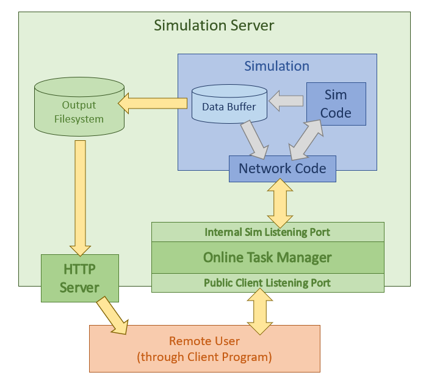
The socket connection between the simulation and the OTM is bidirectional. It can also receive control messages from the OTM or the remote user (sent through the OTM). A thread listens for all incoming data from the network and buffers it until a token that signals the end of a message. The message buffer is then processed by a function that decodes the contents and signals to the appropriate portion of the simulation how to react to the message.
An example of this is the ability for a user to create an “event” dynamically in the simulation, such as signaling the closing of a road:
The user sends a message from their client program to the OTM with the details of which road link to close and the duration of the closure.
The OTM forwards the message to the simulation.
When it is received by the simulation network code, the message processing function determines it is a dynamic event for the simulation and packages it into the correct internal data structure for the queue of upcoming events.
It is inserted at the correct location into the queue and normal simulation operations trigger the closure to occur in the model as they would any other type of event loaded from the input files.
The structure of the network code in both the OTM and the simulation do not need to understand the contents of what is received until it is decoded inside the message parsing function. This means to add new network commands and functionality from the user, the simulation only needs to be modified within the received message parsing function. The core functionality of the network code to send and receive messages needs no alteration.
Visualization interface (VI)¶
A web-based VI is developed to display simulation information. The VI is written using React with layers powered by Deck.gl. An online demo is available at https://engineering.purdue.edu/HSEES/EvacVis/.
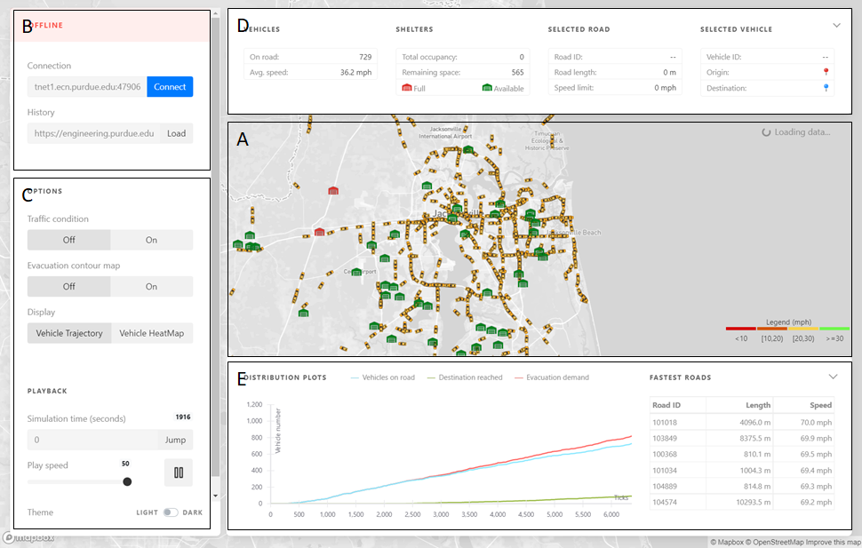
The VI consists of five components (as shown in the above screenshot):
A is the evacuation map with road networks, shelters and vehicles displayed.
B is the client panel that controls the connection between the user interface and the remote server, in offline mode, the user just needs to specify the location of the simulation outputs.
C is the control panel that enables changing the playback speed and the display layers, one can choose.
D is the information panel that shows the number of on-road vehicles, speed, shelter status, and information of the selected vehicle.
E is the chart panel for displaying the dynamics of the departures and arrivals of the evacuation vehicles.
Online mode: When the VI successfully connects with the online task manager, it enters the online mode. The user can specify the parameters of running a new simulation instance, like the demand scenarios, the routing strategy (shortest path, k-shortest path), and the simulation duration. Similar to the offline mode, the simulation outputs would be visualization through the user interface. Besides this, during the simulation the user can also specify online event inputs (e.g., road closure on specific roads), set up the event start and end time, and monitor the traffic state changes induced by these events.
Online Task Manager (OTM)¶
The VI and other clients like it can connect to the Online Task Manager (OTM) system, which controls running the simulation on behalf of a wider range of users. It does this on a remote server via network communication and frees these users of any need to manage their own installation of the simulation or need to understand the technical details about how it is running. It is composed of two major components:
A Gateway Control Program (GCP) that handles the communication between all parties involved and manages the execution of the simulation.
A prepared copy of the simulation that has already been configured for the server environment and will run in a special “batch mode” without a GUI provided by the Repast Simphony framework for servers.
System administrators who install a copy of the OTM for their users will first follow a procedure inside the simulation’s Repast Simphony GUI to prepare a copy of the model for their server. They will then transfer it to their server and pre-configure it with specific details about the server’s operating environment. This will serve as a template for the simulation that is used each time a user connects to the OTM via a client like the VI website. This preparation work by the administrators is what allows the end user to easily input their simulation variables and begin executing the model immediately on the remote server.
Structure of the Gateway Control Program (GCP)¶
The GCP is written in the JavaScript language for the Node.JS runtime environment. When it starts, it listens publicly on a port for incoming WebSocket connections from user clients like the VI website. Control commands, status updates, data, and other types of messages are sent back and forth between the user and the GCP over this WebSocket. The user is shown what options are available through the OTM and is given a chance to specify which values to use to configure their simulation. The user then signals their simulation to start, and the OTM delivers to their client program periodic updates of the status of the simulation and various ways to monitor its output and progress.
Internally, the GCP uses the preset configuration values to execute the simulation on the server for the user. It manages the actual execution of the process in the server. The simulation connects to a different port where the GCP is listening for simulation programs to report their status and receive commands.
Before starting the simulation, the GCP generates a unique ID value for each copy of the simulation and inserts it with the user’s input variables. When the simulation connects to the GCP, it identifies itself with this ID value, and the GCP manages keeping track of which internal connection to a simulation corresponds to which external WebSocket connection to a user client.
Separate from the GCP, it is possible to server the output files via an HTTP webserver if system administrators configure this option. This allows clients like the VI website to access output files at-will for more advanced data analysis than simple real-time status monitoring would allow.
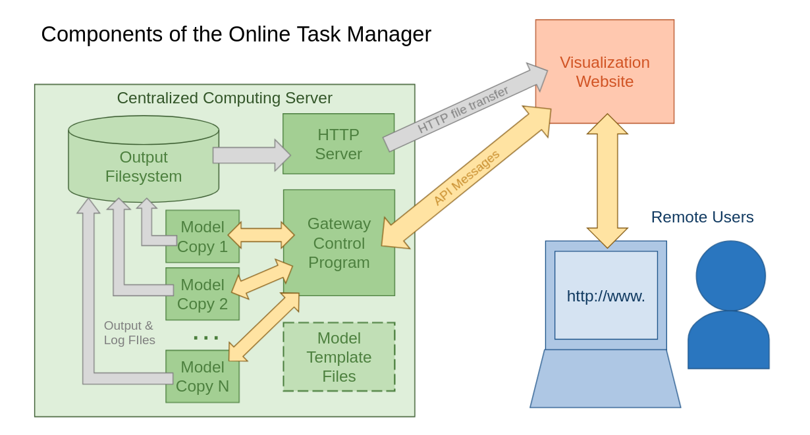
Message protocol between OTM and client programs¶
The gateway control program (GCP) of the online task manager (OTM) system communicates with client programs via a WebSocket connection with a simple message protocol. New client programs can be created to connect to use the OTM system by simply implementing this protocol.
A simple HTML file that has implemented the protocol in Javascript is included in the GCP code repository found at https://bitbucket.org/purduesimulation/control-program/. This reference and debugging client can be used to connect to an instance of the OTM system and perform and inspect any piece of the workflow described in this section. This debugging client shows statistics about the connection and traffic, logs different pieces of the received traffic, provides templates for each type of message supported in this protocol, and also allows the sending of any arbitrary message to the OTM to test new features which may have been added to a custom installation of the simulation or the OTM.
Creating and configuring a new simulation execution¶
The OTM works by automating the steps of running the simulation in “batch mode” on a server without a GUI. It keeps a base copy of the simulation with default settings pre-configured for the server environment. When a user requests to run the simulation through the OTM, it first makes a new copy of this base template in the scratch area specified in the OTM configuration using a temporary name that is based on the current system timestamp. It will be modified by input selections the user makes and it is here where result files and logs will be written during the execution. This step is triggered by the client by sending the message:
CREATE
After creating the copy, the OTM responds with a status message saying it is ready to setup the new simulation execution and sends a second message to the client with a JSON object which lists all the configuration options that are supported. This may take a few seconds as it depends on file operations within the server to finish.
The status message sent first is an example of the type of formatting to expect of messages coming from the OTM system. The message will be composed of a first line that shows a keyword for the message type. The remaining contents from the second line to the end of the message will be the “payload” of the message the client will need to parse. The STATUS message will have a payload that is a JSON object which will have at least a “state” and a “tick” value:
STATUS
{ “state”: “setup”, “ticks”: “0” }
At the same time the OTM will send a second message that has a first line OPTIONS to give the client a list of all configuration values the user may select. The client should update it’s UI to display these available values to the user and prompt them to make their selections.
OPTIONS
{
"name": {
"label": "Name",
"description": "A name by which this execution of the simulation will be referenced. If no name is given, one will be made automatically from the time, date, and other options selected.",
"type": "string",
"required": false,
"default": null,
"maxLength": 200
},
// additional configuration variables...
}
The client should then update its configuration UI to display the available options to the user and prompt the user to enter their selections. After the user has sent back selections to the OTM, the client should send back to the OTM a message with the first line CONFIG and the remaining lines of the message being a JSON object of key/value attributes for the user’s selections, using the same attribute names from the OPTIONS object that was sent to the client.
CONFIG
{"name": "chris_test1",
"demand": "Shen-scenarios/base-clean.csv",
"event": "10_10_jacksonville.csv",
"routing": "sp",
"strategy": "1",
"ticks": "25000"
}
Upon receiving this message, the OTM will update the copy of simulation created for this execution with the selections that have been made. This should be a relatively fast step as it is mainly just rewriting a few lines within the Data.properties file. Once this is complete, the OTM will reply with a new status message indicating it is in the ready state and can begin running the simulation when the user sends the signal to start:
STATUS
{ “state”: “ready”, “ticks”: “0” }
Running and monitoring the simulation¶
When the user signals in the client that they wish the simulation to start running, the client sends to the OTM a one keyword message:
START
The OTM will then begin running the copy of the simulation it has created for the user on the server and begin streaming back to the client through the network connection a variety of monitoring and output messages that can be used (or ignored) to keep the user informed of how the simulation is running. After the model starts running, the OTM will start sending the previous state-change status messages at a regular interval to allow for monitoring of the model “tick.” It may also send other values within the payload JSON object related to the status of the simulation.
STATUS
{ “state”: “running”, “tick”: “123456” }
The simulation will send to the OTM the actual console output (both stdout and stderr), and the OTM will forward this log to the user’s client program. These messages will begin with a first line of either OUTPUT or ERROR and the remaining message from the second line to the end is the next chunk of actual output from the simulation. These messages are buffered and not sent line-by-line to reduce overhead and the total number of messages being transmitted. The client program can choose to ignore these message types or can do as the reference debugging client does: append them to a logging text area so the user can see what the simulation is doing as if they were running it on a local console.
Shortly after the execution of the simulation starts, the OTM will send a message that gives the URL to the HTTP server that is hosting the output files. The OTM can stream the output data directly from the model over the network connection to a client program real-time as it is created if the simulation is configured to provide this, but clients can also access the output files directly at any time after they are written via an HTTP server. This message will have the first line keyword LOCATION and the second line will be the URL to the directory holding the simulation copy. The client program can use this information as needed to create whatever data or log analysis it is designed to provide to the user.
LOCATION
https://engineering.purdue.edu/HSEES/gateway/1628621063834-chris_aug10_test1
Any additional messages directly from the simulation will be forwarded to the client. This includes the streaming real-time output data if the simulation has been configured in its Data.properties file to provide real-time output through the network. It also can include additional types of status messages or error messages that the simulation sends over the network or any custom additions made to the simulation. These additional messages from the model will be forwarded by the OTM to the user’s client program with the first line MODEL to indicate that it is data directly from the simulation and not the OTM. The second line through the end of the message will be the raw, unprocessed information from the simulation.
MODEL
Some sort of data from the simulation, of any length or number of lines…
When the simulation has finished running, a final status message is sent to the client signalling this. At this point, the simulation program has stopped executing on the server and the client can close the WebSocket connection to the OTM system.
STATUS
{ “state”: “done”, “ticks”: “250000” }
The client program can perform this workflow in multiple connections simultaneously to manage multiple simulations for a user at the same time. The Node.JS runtime engine upon which the OTM is built is used by many organizations to create servers that successfully handle hundreds or thousands of users simultaneously. The limiting factor in the number of simulations that can be executing concurrently will be the computation, memory, and storage resources available on the server.
Sending messages directly to the simulation
Just as the client can receive arbitrary messages directly from the simulation by prepending the keyword MODEL, the client can send any message directly to the simulation by also starting it with the first line keyword of MODEL. This allows the simulation to be customized or gain new features over time without the OTM needing to be updated to handle processing of new message types. These MODEL messages from the user client will be forwarded directly to the simulation without any processing by the OTM.
The simulation documentation should be consulted for the formatting expected of any such messages. One example is the ability to insert real-time events into the simulation to alter the road network. A client can send one of these to the simulation by composing a message that has the first line MODEL and the second line “payload” of the actual data the simulation is expecting to receive:
MODEL
EVENT,1,12500,3,104651,12,1
Using batch mode¶
The primary method of using a Repast-based simulation is interactively through a graphical interface. The Repast Simphony framework, however, also provides a powerful advanced “batch mode” to automate running a set of many simulations with parameter sweeps. To effectively use this mode, developers need to customize the simulation code to make use of new variables inserted at runtime and become familiar with the technical details of the operating system where the simulation will be running.
The Repast Simphony GUI contains a batch mode configuration wizard that allows users to define the names and types of runtime variables as well as the range of values for each to sweep. The wizard creates files defining all possible combinations of these values across the full ranges the user specifies and packages this with a special version of the simulation compiled to run without a GUI and some shell scripts that will loop through all the permutations to run a separate copy of the simulation for each one.
The particular variables given to each copy of the simulation are accessible only inside the executing simulation from the Parameters key/value dictionary of the Repast library’s RuntimeEnvironment. The simulation code must be altered to call the Repast library to read the value at runtime. This example shows reading a batch mode variable value_a:
import repast.simphony.engine.environment.RuntimeEnvironment;
import repast.simphony.parameter.Parameters;
...
Parameters params = RuntimeEnvironment.getInstance().getParameters();
int value_a = (Integer)params.getValue(“value_a”);
...
If this was the only batch mode variable and the user had specified a range of 1 to 5, then the batch mode wizard would have instructed the simulation to run five copies of itself, each receiving a different value for this variable from that range.
If there was a second variable named value_b that was given a range of 6 to 9, then there would be twenty different copies of the simulation (5 x 4) created with all possible combinations of these two ranges.
(value_a, value_b) : (1, 6) (2, 6) (3, 6) (4, 6) (5, 6)
(1, 7) (2, 7) (3, 7) (4, 7) (5, 7)
(1, 8) (2, 8) (3, 8) (4, 8) (5, 8)
(1, 9) (2, 9) (3, 9) (4, 9) (5, 9)
The Repast system will not run all of these copies at the same time. The user must configure the “hosts” where the simulation will run and specify the number of each that are allowed to run concurrently to create a pool of workers for the simulations. It will pull an idle member of this host pool as long as is necessary until all the simulations queued have been exhausted and will copy all the outputs that match filename patterns specified by the user back to the local workstation.
The user can choose to run all of these simulations locally on the same workstation, but the true power of batch mode is when the simulations are sent to a high powered remote server to run in parallel. To do all this, though, the user will need a working knowledge of how to connect to the server and have enough knowledge about how to use it for configuring and testing the simulation.
The user will need to have an account which can connect to each server over SSH and will need to create an SSH key so that the program can authenticate with automated scripts instead of prompting the user to enter passwords. The user will need to connect to the server at least once so that they can add the public SSH key to their ${HOME}/.ssh/authorized_keys file on the server.
The user will also need to be sure the remote systems have an appropriate Java Runtime Environment (JRE) installed and may need to alter the shell scripts which are sent with the simulation to tailor specific details of the servers. Once the user has confirmed the simulation can run on the specific server, the Repast batch mode wizard can save these settings as a profile to be reloaded for future simulation runs.
There are other considerations that will need to be made within the simulation, as well. In order to operate in batch mode, a simulation will need to have clear conditions under which it will self-terminate as the user will not be monitoring the simulation with a button to push to stop it. By default most Repast-based simulations will continue to run without end until a user manually stops them. For this project, the A-RESCUE simulation does have self-termination conditions if a maximum “tick” is reached or if all vehicles have exited the road network with no possibilities of additional vehicles being generated later by the demand. If the simulation code has been customized, however, adding additional conditions to self-terminate the simulation once it is no longer productive to the specific experiment can potentially save large amounts of computation time and resources instead of allowing it to continue to execute until the maximum “tick” is reached. If the remote server to which the simulation is sent is a commercial cloud like AWS or Google Cloud, this saved time could result in significant cost savings.
Utilizing batch mode effectively is not a simple task for casual users, but it can be a powerful tool to accelerate the amount of experimentation if handled carefully. To learn the specifics of how to use the batch mode with more details on all these topics and examples, consult the official Repast Simphony documentation.
Notes¶
Version history¶
New in V3.0¶
Improvements in performance and scalability
Removed the computationally expensive Galois coordinate mechanism that uses unnecessary location methods (e.g., quadtree) and replaced it with a simple 2D coordinate system.
Added checks to remove or reduce gridlocks at intersections during complicated maneuvers. This was done by setting thresholds on the time it practically takes to clear intersections in case of mild traffic jams.
User interface and functionality improvements in the VI module
Revamped the user interface with a Material UI theme.
Added charts and information panels for status updates.
Added dark theme.
Integration with VI module
Modified the output data structure to optimize data transfer speed to the visualization interface (VI), its performance in the online mode, and reduce data local storage (for example, by removing redundant decimal places after vehicle snapshot information).
Shelter routing strategies
Added three routing strategies for shelter-bound evacuees who are rejected by their first shelter. This includes a blind search, a relatively wise selfish search, and a central matching recommendation. See Shelter routing section for details.
K-shortest paths and stickiness to initial route
Extended shortest path-based vehicle routing to a probabilistic k-shortest path-based routing.
New in V2.0¶
Parallelization, network partitioning, and load balancing
Implemented Metis partitioning to partition the road network into parallelizable subgraphs based on the latest state of the vehicles during the simulation run.
Used efficient techniques to balance the expected computational load among the network partitions. See Gehlot et al. (2019) and the Performance section for more details.
References¶
Ukkusuri, S. V., Hasan, S., Luong, B., Doan, K., Zhan, X., Murray-Tuite, P., & Yin, W. (2017). A-RESCUE: An agent-based regional evacuation simulator coupled with user enriched behavior. Networks and Spatial Economics, 17(1), 197-223. DOI: 10.1007/s11067-016-9323-0.
Gehlot, H., Zhan, X., Qian, X., Thompson, C., Kulkarni, M., & Ukkusuri, S. V. (2019). A-RESCUE 2.0: A high-fidelity, parallel, agent-based evacuation simulator. Journal of Computing in Civil Engineering, 33(2), 04018059. DOI: 10.1061/(ASCE)CP.1943-5487.0000802.